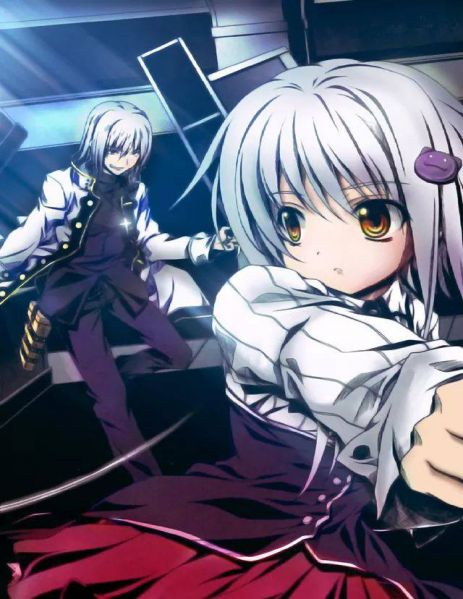
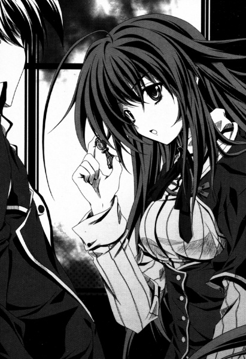

Život 4
Spasiću svog prijatelja
Deo 1
ŠLJAP!
Zvuk odjeknu prostorijom kluba. Zvuk je došao od mog obraza.
Bio sam ošamaren. Buću me je ošamarila po obrazu.
Imala je ozbiljan izraz lica.
„Koliko puta moram da ponovim? Ne znači ne. Ne mogu ti dozvoliti da spaseš tu Sestru.”
Posetio sam školu nakon što nisam uspeo da spasem Aziju i
ispričao sam priču Bućuu.
Čak i nakon što sam ispričao šta se dogodilo, predložio sam da odem u
tu Crkvu.
Očigledno, da spasem Aziju.
Ali Buću je, s druge strane, rekla da se neće
mešati u tu stvar.
Nisam mogao da se složim sa njenom odlukom, pa sam pokušao da je
uverim iako sam znao da je to nepristojno. Zato me je ošamarila.
Prvi šamar koji sam ikada primio u životu boli više nego što sam
mislio. Posebno me srce boli.
Nastavio sam da izneveravam Bućuu koja ima velika
očekivanja od mene.
Ali ipak, postoje stvari od kojih ne mogu da odustanem.
„Onda ću ići sam. Zabrinut sam zbog rituala.
Pali Anđeli nešto rade iza kulisa. Nema
garancije za Azijinu bezbednost.”
„Da li si zaista toliko glup? Definitivno ćeš biti ubijen
ako odeš. Nećeš moći više da se vratiš u život. Da li razumeš?”
Buću pokušava da razgovara smireno, ali mi govori kao da me
upozorava.
„Tvoje akcije će uticati ne samo na mene već i na druge
članove! Ti si Đavo iz Gremori grupe! Moraš toga da budeš svestan!”
„Onda me pusti iz ove grupe. Otići ću tamo kao
pojedinac.”
„Ne mogu to da uradim! Zašto ne razumeš?”
Mislim da je prvi put da vidim Buću ovako besnu.
Pravio sam mnogo problema Bućuu. Ali postoje
stvari od kojih ne mogu da odustanem.
„Postao sam prijatelj sa Azijom Argento. Azija je moj važan
prijatelj. Neću napustiti svog prijatelja!”
„…To je divna stvar. Mislim da je neverovatno ako ti
to možeš da kažeš licem u lice. Ali to je drugačije od onoga o čemu sada razgovaramo.
Odnos između Đavola i Palog Anđela nije tako jednostavan kao
što ti misliš. Dve strane se gledaju popreko stotinama i
hiljadama godina. Ako im pokažeš i najmanju pukotinu slabosti, oni će doći
i ubiti nas. Oni su naši neprijatelji.”
„Zar nije oduvavanje neprijatelja Gremorijev način
delovanja?”
„…………”
Gledamo se popreko.
Nisam odustao. Gledam je pravo u oči.
„Ta devojka je prvobitno bila sa Božje strane. Ona je osoba
sa kojom nikada ne možemo koegzistirati. Čak i ako je otišla sa Palim Anđelima, to
ne menja činjenicu da je ona i dalje neprijatelj nas Đavola.”
„Azija nije naš neprijatelj!”
Snažno sam to porekao. Ljubazna devojka poput nje ne može biti naš
neprijatelj!
„Čak i ako nije, ona nema ništa sa nama. Ise, ti
moraš da zaboraviš na nju.”
Čak i ako to kaže, nema šanse da mogu da zaboravim
na nju!
Onda Akeno-san dođe i šapne Bućuu na uvo.
Šta je to? Da li se nešto desilo? Akeno-san takođe ima
ozbiljan izraz lica. Ali izgleda da nije zbog Bućuu i moje
diskusije.
Buću, koja sluša Akeno-san, pravi ozbiljno
lice.
Baš kao što sam i mislio, nešto se definitivno desilo.
Buću me pogleda, a onda pogleda
preostale članove. „Imam hitnu stvar da uradim sada. Akeno i ja ćemo izaći
na kratko.”
—!
N-Ne!
„B-Buću! Nisam završio razgovor—”
Buću stavi svoj kažiprst na moje usne.
„Ise, ima nekoliko stvari koje treba da ti kažem.
Prva. Ti misliš da je [Pion] slab komad, zar ne? Da li sam u pravu?”
Tiho klimam glavom na njeno pitanje.
„To je veliko nerazumevanje. [Pion] ima posebnu
sposobnost koju nijedan drugi komad nema. Ta sposobnost je [Promocija].”
Promocija? Šta je to?
„Baš kao i u pravoj šahovskoj igri, [Pion] može da se promeni u
druge klase ako stigne do protivničke baze. Oni mogu da promovišu u
bilo koji drugi komad osim [Kralja]. Ise, kada kročiš nogom u
lokaciju koju ja priznam kao „Neprijateljska baza”, ti si u stanju da se promeniš u bilo koji komad
osim [Kralja].”
O, čoveče! Znači mogu da promovišem u Kibinu [Konjanik] klasu,
Koneko-čaninu [Top] klasu, pa čak i Akeno-saninu [Kraljica] klasu!?
„Pošto nije prošlo mnogo vremena otkako si postao Đavo,
postoje ograničenja, tako da je verovatno još uvek nemoguće da budeš
promovisan u ultimativni komad, [Kraljicu]. Ali mogao bi da se promeniš u druge
klase. Ako snažno želiš [Promociju] u svom srcu, onda će
doći do promene u tvojoj sposobnosti.”
Neverovatno! Samo slušanje toga mi je dalo mnogo informacija!
Ako dodam promociju svom Svetom Oruđu, onda bih možda mogao da
pobedim onog sveštenika!
„Takođe još jedna stvar. Radi se o Svetom Oruđu. Kada
koristiš svoje Sveto Oruđe, samo zapamti ovo.”
Buću počinje da mi gladi obraz svojom rukom.
„—Želja. Sveto Oruđe se pokreće snagom želje.
I ona takođe određuje i moć za njega. Iako si Đavo,
tvoja volja za željom nije izgubljena. Što je tvoja želja jača, to će
tvoje Sveto Oruđe snažnije reagovati na tebe.” —Želja.
Moć želje će aktivirati Sveto Oruđe…
Znači ako to snažno poželim, ovo će se aktivirati.
„Postoji još jedna stvar koju nikada ne bi trebalo da zaboraviš, Ise. Čak
i [Pion] može da obori [Kralja]. Ovo je osnovno u šahu. Ova istina se takođe
primenjuje i na šahovske figure Đavola. Možeš postati jači.”
Nakon što je to rekla, ona se teleportuje na neko drugo mesto
kroz magični krug zajedno sa Akeno-san.
Jedini koji su ostali smo ja, Kiba i Koneko-čan.
Nakon što sam duboko udahnuo, već sam bio
odlučan da odem i spremao sam se da krenem. „Hjodo-kun.” Kiba me zove.
„Da li ideš?”
„Da, idem. Moram da idem. Azija je ipak moj prijatelj. Ja sam
taj koji mora da je spase.”
„…Bićeš ubijen. Čak i ako imaš Sveto Oruđe,
i čak i ako koristiš [Promociju], ne možeš da oboriš grupu Egzorcista i
Palih Anđela sam.”
Logičan odgovor.
Već znam to. Veoma sam svestan toga.
„Čak i tako, idem. Čak i ako umrem, oslobodiću Aziju.”
„Dobra odlučnost, to bih voleo da kažem, ali
je i dalje nepromišljeno.”
„Onda šta bi trebalo da uradim!”
Povikah na njega, ali on mi odgovara direktno.
„I ja idem.”
„Šta…”
Izgubih reči nakon što čuh nešto neočekivano.
Naravno. Upravo sam čuo nešto što nisam očekivao.
„Ne znam mnogo o Azija-san, ali ti si moj saborac.
Čak i ako je Buću to rekla, postoji deo mene koji poštuje tvoju odluku.
Takođe, lično ne volim Pale Anđele i sveštenike. Prezirem ih.”
…Ovaj momak verovatno takođe ima neku vrstu prošlosti.
Ali čuti reč „saborac” od njega…
„Sećaš li se šta je Buću rekla? „Kada kročiš nogom u
lokaciju koju ja priznam kao „Neprijateljska baza”, ti si u stanju da se promeniš u bilo koji komad
osim [Kralja]”. Znači, zar nam ona indirektno ne govori da „Ja priznajem
da je Crkva lokacija gde je neprijatelj Rijas Gremori”?”
„Ah.”
Konačno shvatam.
Razumem, znači to je ono što je mislila.
Zato mi je rekla informaciju o [Promociji].
„Buću ti je indirektno odobrila da ideš. Naravno, mislim
da ona takođe misli da i ja treba da te podržim. Buću možda ima neku vrstu
plana. Da nije tako, zaustavila bi te tako što bi te zaključala negde.”
Kiba se smeje.
…Buću, hvala ti puno!
Još jednom sam posvedočio koliko je Buću milostiva, i
zahvalio joj se iz dna srca.
Ako se vratim bezbedno, radiću još napornije!
Zahvaljujem se Bućuu koja nije ovde tiho, i devojka
sitne građe mi prilazi.
„…I ja idem.”
„Šta-, Koneko-čan?”
„…Ja
se osećam nelagodno što samo vas dvojica idete.” Koneko-čaaaaaaan! Ne mogu da
provalim šta joj se mota po glavi pošto ne pokazuje nikakav izraz lica, ali osećam kao
da sam upravo posvedočio njenoj ljubaznosti skrivenoj u njoj!
„Dirnut sam! Trenutno sam tako duboko dirnut,
Koneko-čan!”
Postao sam emotivan zbog reči ove devojke.
„H-Huh? Ali i ja idem…”
Kiba navlači tužan osmeh. Znam, Kiba. Hvala ti.
Pomislih da je problematičan lepotan pomalo sladak.
U redu! Sa ovim je moguće! Možemo mi to!
„Onda idemo u misiju spasavanja nas troje!
Čekaj nas, Azija!”
Tako smo nas troje krenuli ka Crkvi.
Deo 2
Nebo je već tamno, i već je vreme da se
ulične svetiljke upale.
Nas troje, Kiba, Koneko-čan i ja, osmatramo
Crkvu sa mesta odakle je možemo videti.
Niko ne ulazi niti izlazi iz Crkve.
Ali što smo se više približavali Crkvi, sve više sam počeo
da imam loš predosećaj. Znoj me obliva po celom telu.
Kada pitam Kibu, on kaže da je, „Po ovom prisustvu,
sigurno da je Pali Anđeo unutra”.
Znači šef neprijatelja je unutra.
„Evo, pogledaj ovu mapu.”
Kiba raširi mapu zgrade na putu.
Mapa Crkve. Odakle mu to…? „Pa, to je osnovno kada
ulaziš na neprijateljsku teritoriju.”
Dobro izgledajući momak se osmehuje.
Vau, kakva brza podrška. Nisam ni razmišljao o tome i
pokušavao sam da uletim glavom bez obzira.
Ponovo sam shvatio koliko sam naivan.
„Pored svetilišta, tu je i spavaonica.
Svetilište izgleda sumnjivo.”
Kiba pokazuje na svetilište.
„Znači možemo da ignorišemo spavaonicu onda?”
„Najverovatnije. Većina grupa „Zalutalih Egzorcista” obično
napravi neke izmene na svetilištu. Oni obično izvode sumnjive rituale ispod
svetilišta.”
„Zašto?”
Rekao sam mu svoju sumnju. Kiba se gorko osmehuje.
„To je mesto koje su nekada poštovali kao sveto mesto, i
time što tamo rade nešto što odbacuje Boga, to ih zadovoljava jer je to
uvreda za Boga. Zato što su voleli Boga, zato što ih je Bog odbacio,
oni namerno bacaju zle čini ispod svetilišta kao predstavu za
svoju mržnju.”
Oni su ludi. Ne, čak je i Bog koji je odbacio svoje
verne vernike kriv.
Trenutno mrzim Boga zbog incidenta sa Azijom.
Zato tako i mislim.
„Svetilište se nalazi odmah iza ulaza.
Mislim da možemo da uđemo pravo unutra. Problem je pronaći vrata za podrum
kada uđemo u svetilište, a takođe i da li možemo da pobedimo ubice koji nas čekaju.”
Ubice…
Kada sam čuo tu reč, počeo sam da imam loš predosećaj.
Gledamo se u lice ispred Crkve dok
mesečina osvetljava naša lica, a onda klimamo jedan drugom.
Spremni smo!
Sada nam samo preostaje da uđemo!
Čekaj me, Azija!
Prođosmo kroz ulaz i krenusmo pravo ka
svetilištu.
Pali Anđeli će do ovog trenutka primetiti naš upad.
Znači neprijatelj zna da smo ušli na njihovu teritoriju.
Nema povratka. Jedino što preostaje je da krenemo
pravo unutra!
Otvaramo vrata i stupamo unutar svetilišta.
Tu je oltar i dugačke stolice. Izgleda kao
obično svetilište. Svetlost sveća i unutrašnje lampe osvetljavaju svetilište.
…Oh, tu je nešto što ne izgleda normalno.
Kip osobe na krstu. Glava mu je
uništena.
Kakav jeziv prizor.
PLJES PLJES PLJES PLJES
Onda pljesak odjekuje kroz svetilište. Neko ko liči
na sveštenika se pojavljuje iza stuba.
Videvši njegovo lice, osetih gađenje.
„Sastanak! To je ponovni susret! Tako emotivno!”
To je onaj belokosi usr**i Sveštenik!
Mislim da mu je ime Frid. To je on. Znači on je takozvani
ubica, ha.
On zaista ima čudan osmeh kao i uvek.
„Pa, nikada ranije nisam sreo istog Đavola dva puta! Znate,
pošto sam super jak, isečem Đavole na komade kada ih prvi put sretnem! Jednom kada ih
vidim, isečem ih na licu mesta! Onda poljubim leš i kažem zbogom!
Tako sam nekada živeo! Ali pošto ste mi vi momci upropastili stil, tako sam izgubljen!
To nije dobro~. Nije dobro mešati se u moj način života~! Zato~!
Vi momci me nervirate! Nadam se da ćete umreti! Zaista umreti! Vi jadni
Đavoliiiiiiiiiiii!” Nakon što je pokazao svoju radost i tugu, sada je u besu.
On vadi pištolj i mač sa drškom od ranije.
BOOOM.
Sečivo svetlosti se pojavljuje. Biće problematično da se
isečem tim mačem. I taj pištolj je takođe problematičan.
Ali drugačije je nego ranije. Sada je 3 na 1.
„Vi momci ste došli da spasete Azija-tan, zar ne? Hahaha!
Đavoli-sama su velikog srca što su došli da spasu kučku poput te koja bi
čak i Đavole lečila! Pa, samo biti opčinjen Đavolom trebalo bi da ubije tu Sestru!”
Umreti? Šta on misli!?
„Hej! Gde je Azija!?”
„Pa, ispod tog oltara se nalazi skriveno stepenište. Od
tamo možeš da odeš do mesta gde izvode ritual.”
Taj momak je izbrbljao lokaciju skrivenog podruma
pokazujući na oltar.
Da li on uopšte zna da mora da nas zaustavi? Ili je izbrbljao
zato što je siguran da može da nas ubije i da će to rešiti
problem?
„Sveto Oruđe!”
Sinhronizovano sa mojim povikom, crvena rukavica se pojavljuje na mojoj
levoj ruci.
Opremanje Svetog Oruđa, završeno! U redu!
Kiba vadi svoj mač iz korica i Koneko-čan—
Huh! Toliko sam šokiran da će mi oči ispasti.
IDI IDI IDI……
Koneko-čan
podiže klupe koje su nekoliko puta veće od nje.

„…Bićeš smrskan.”
Koneko-čan baca klupe na Sveštenika! Super Devojka, to je
potpuno neočekivani metod napada!
„Vau! O, da!”
Sveštenik uradi mali ples i preseče stolicu na pola sa
svojim sečivom svetlosti. Stolica koja je presečena na pola pada na zemlju.
„Tamo.”
BRZO.
Kada sam pomislio da je Kiba krenuo napred, on je već nestao.
Toliko je brz da ne mogu da ga vidim!
GIIN!
Iskre sevaju između Kibinog mača i Sveštenikovog
sečiva svetlosti.
Znači čvrsto je uprkos tome što je napravljeno od svetlosti, ha. Na kraju krajeva,
čak i ako Kiba seče pravo na njega, mogu da čujem zvuk dva metala
koja se sudaraju jedan o drugi.
„Hmmm! Hmmm! Kakva gnjavaža! Zašto ste vi momci toliko bučni!? Ja sam
super veoma loš! Žao mi je što govorim jezikom smrti! Oprostite mi nakon što
umrete!”
Kiba izbegava bešumne metke svojim nogama na koje je ponosan
dok nastavlja da napada svog neprijatelja.
Kiba koji izbegava sve Sveštenikove napade je neverovatan.
Ali i Sveštenik je nešto jer može da se bori
ravnopravno sa Đavolom.
Čoveče, ponovo je zaustavio Kibin udarac!
Ne mogu da uhvatim Kibine pokrete svojim očima, ali Sveštenik
može.
Znači onaj usrani Sveštenik nije protivnik sa kojim mogu da se nosim
sam.
Kiba i Sveštenik onda počinju da se bore prsa u prsa. Oba
od njih se gledaju popreko.
„Impresivno. Prilično si jak.”
„Ahaha! I ti takođe! [Konjanik], ha!? Ni jedna jedina slepa
tačka! Ovo je sjajno! Da da, o tome ja pričam. U poslednje vreme, nisam
imao ovakvu sjajnu bitku! Umalo nisam zaplakao zbog toga! Hmmm! Hmmm!
Ubiću te!”
„Onda možda i ja treba da se borim ozbiljno malo onda.”
Kiba će se boriti ozbiljno? Šta će on da uradi?
„Izvoli ovo.”
Tihi glas. Ne mogu da verujem da je to Kibin glas jer
ima neku intenzivnost u sebi.
Onda, neka crna stvar izlazi iz Kibinog mača. Počinje
da prekriva ceo mač.
Tama.
Ako moram da ga opišem, to bi bilo to.
Tama prekriva mač.
Ne, više kao da se tama oblikuje u Kibin
mač.
Mač tame koji se sudara sa Sveštenikovim
sečivom svetlosti počinje da se širi i proždire sečivo svetlosti.
„Šta, šta je ovo dođavola!?”
Sveštenik izgleda zbunjeno.
„—[Sveti-Brisalac], mač tame koji proždire svetlost.”
„D-Da li si i ti posednik Svetog
Oruđa!?” Sveto Oruđe! I Kiba takođe!?
Mislim, mač tame izgleda sjajno!
Prokletstvo! Znači dobro izgledajući momci dobijaju i dobro izgledajuće oružje
takođe!?
Sveštenikovo sečivo svetlosti je potpuno proždrano od strane
Kibinog mača, i ne može da održi svoj oblik nakon što su svetlosti proždrane.
Sada! Ovo je moja šansa! Krenuh
pravo na njega!
„Sveto Oruđe! Aktiviraj se!”
[Pojačanje!!]
Zvuk izlazi iz dragulja i moć teče u
moje telo.
Moj cilj je usr**i sveštenik.
Sveštenik postaje svestan mene.
„Stalno ti govorim! Ti si dosadan!”
On uperi svoj pištolj koji je napunjen mecima svetlosti u
mene. Metak je ispaljen bez ikakvog zvuka.
Ovde!
„Promocija, [Top]!”
BAŠIIN!
Metak svetlosti me ne probi, već se
vraća u ništavilo.
„—! Promocija!? [Pion]!?”
Sveštenik izgleda šokirano.
Da, ja sam [Pion]! [Pion] koji će te razbiti!
„Osobine [Topa]! Nestvarna odbrana i-!”
Moja leva pesnica udari Sveštenikovo lice. To sam pomislio,
ali osetih nešto tvrdo na svojoj pesnici.
Čak i tako, udarih svom snagom!
Sveštenik biva odbačen daleko unazad!
„Smešno jaka snaga napada.”
Smejem se dok teško dišem.
„To je za udaranje Azije onaj put. Osećam olakšanje što sam
te udario jednom.”
Sveštenik je na zemlji, ali ustaje polako i pljuje
krv na zemlju.
Njegov desni obraz je otečen.
Samo to? Promovisao sam se u [Topa], ali izgleda da i dalje
nemam Koneko-čaninu napadačku moć.
Ne, ako pažljivo pogledam, njegov mač sa drškom je smrskan.
Da li je to koristio kao štit neposredno pre nego što ga je udarila
moja pesnica?
Znači to je tvrda stvar koju sam osetio. On ima brzu reakciju.
„…Hmmm ……O čoveče, ne samo da me je udario
jadni Đavo, već mi govori neke čudne gluposti…—Ne zajebavaj se sa mnom.”
Sveštenik zavija.
„Ne zajebavaj se sa mnom!! Ti usr***e! Običan Đavo ne bi trebalo da se
ponaša nadmeno prema meneeeeee! Ubiću te! Definitivno! Definitivno ću te ubiti!
Iseći ću te na komade, usr***e!”
Sveštenik vadi svoj drugi mač koji ima samo
dršku.
On ga još uvek ima!? Koliko ih ima!?
Ali nas troje, ja, Kiba i
Koneko-čan, okružujemo Sveštenika. Sveštenik to primećuje, i gleda okolo.
Počinje da se smeška.
„Vau, vau. Da li je ovo ono što vi zovete krizom? Hmm, za mene,
biti ubijen od strane Đavola je ne-ne, tako da imam osećaj da se povlačim. Šteta
što ne mogu da vas isteram, ali takođe ne želim da umrem!”
Sveštenik vadi nešto okruglo i razbija ga na
pod.
Odmah, naše oči su zaslepljene sjajnom svetlošću.
Sranje! Dimna zavesa!?
Kada su mi se oči oporavile, pogledah okolo, ali Sveštenika
nema.
Onda se Sveštenikov glas čuje negde izdaleka.
„Hej. Đavole-gunđalo tamo…Ise-kun, zar ne? Da ti kažem
istinu, zaljubio sam se u tebe. Tako da ću te definitivno ubiti.
Definitivno, u redu? Neću oprostiti usr**om Đavolu koji me je udario i održao mi
predavanje, u redu? Onda, ćao-ćao.”
Kada su mi se oči potpuno oporavile, ponovo pogledah okolo,
ali Sveštenik je nestao bez traga.
…Pobegao je.
Čak je ostavio i oproštajne reči…
Razmišljao sam o tome, i shvatio da nemam vremena da
gubim na njega.
Kiba, Koneko-čan i ja klimamo jedan drugom i krenusmo ka
skrivenim stepenicama ispod oltara.
Deo 3
Nas troje silazimo niz stepenište ispod oltara.
Izgleda da struja radi čak i ovde.
Sa Kibom ispred nas, idemo napred.
Posle stepenica, tu je jedan prolaz. Ponekad
postoje vrata sa obe strane zida. Znači ovo je podrum, ha.
Koneko-čan pokazuje na dalji kraj govoreći: „Moguće da je
na kraju ovog prolaza… Mogu da osetim miris te osobe…”.
Znači Azija je tamo. Onda mi se duh razbudi.
Čekaj me, Azija. Uskoro ću biti tamo!
Kada smo ušli dalje, pojavljuju se velika vrata.
„Da li je to to?”
„Moguće. Siguran sam da su grupe Egzorcista i
Palih Anđela unutra. Da li ste spremni?”
Koneko-čan i ja klimamo Kibi.
„U redu. Onda ćemo otvoriti vrata—”
Kada smo Kiba i ja hteli da otvorimo vrata, vrata se otvaraju
sama od sebe.
Praveći veliku buku, unutrašnjost mesta za ritual
postaje vidljiva.
„Dobrodošli. Đavoli.”
Pali Anđeo, Rejnare, progovara sa kraja sobe.
Soba je puna sveštenika. Svi oni imaju dršku mača
koja stvara sečivo svetlosti u njihovim rukama.
Pogledah devojku koja je vezana za krst i
povikah.
„Azijaaa!”
Azija primeti moj glas i pogleda me.
„…Ise-san?”
„Da! Došao sam da te spasem!”
Osmehnem joj se i suza joj kane iz oka.
„To je dirljiv ponovni susret, ali prekasno je. Ritual će
uskoro biti završen.”
Ritual je završen?
Šta ona misli—
Odjednom, Azijino telo počinje da svetli.
„…Aaah, iyaaaaaaaaaaaa!”
Azija vrišti. Izgleda veoma bolno.
„Azija!”
Pokušah da stignem do nje, ali me sveštenici okružuju.
„Nećemo ti dozvoliti da se mešaš!”
„Prokleti Đavoli! Uništiću vas!”
„Sklonite se! Usrani sveštenici! Nemam vremena da se bakćem sa svima vama!”
BAN!
Veliki zvuk. Kada sam pogledao, Koneko-čan je udarila jednog od
sveštenika i odbacila ga.
„…Molim vas, ne dirajte me.”
Kiba takođe vadi svoj mač tame.
„Izgleda da ću morati da krenem punom parom od
početka. Mrzim Sveštenike. Ako ih ima ovoliko, onda se neću suzdržavati da
prožderem vašu svetlost.”
Kibine oči postaju oštre i mogu da osetim jezu od njega.
Tama pokazuje veoma gustu nameru ubijanja. Ovo
će biti sveopšti rat.
„Iyaaaaaa……”
U isto vreme, velika svetlost izlazi iz Azijinog tela.
Rejnare je uzima u svoju ruku.
„To je to! Ovo je moć za kojom sam čeznula dugo
vremena! Sveto Oruđe! Sa ovim, biću voljena!”
Sa izrazom ekstaze, Rejnare grli svetlost.
Onda jarka svetlost obavija ritualnu sobu.
Kada svetlost prestane, tu je Pali Anđeo koji emituje
zelenu svetlost iz svog tela.
„Ufufu. Ahahahahahaha! Konačno ga imam! Vrhovnu
moć! Sa ovim, mogu postati vrhovni Pali Anđeo! Sa ovim mogu da vratim
svima onima koji su me gledali s visine!”
Pali Anđeo se glasno smeje.
Nisam obraćao pažnju na nju i krenuo sam pravo ka Aziji.
Sveštenici pokušavaju da me zaustave, ali Kiba i Koneko-čan
me podržavaju tako što ih oduvavaju.
Kibin mač proždire svetlost sveštenikovog mača, i
Koneko-čan udara sveštenike koji su izgubili oružje jednim moćnim udarcem.
Kombinacija ovo dvoje je izvanredna, i očigledno je da to nije tip
kombinacije moguće sa nekoliko dana vežbe.
„Hvala vam, vas dvoje!”
Azija, koja je vezana za krst. Izgleda beživotno.
Ne, ona bi i dalje trebalo da bude u redu!
Odvijam stvari na njenim rukama i nogama, i držim je u
svom naručju.
„…I-Ise-san…”
„Azija, došao sam da te vratim.”
„…Da.”
Njen glas je veoma tih kada je odgovorila, i nije
zvučao živahno.
Hej, hej!
Ona bi i dalje trebalo da bude dobro, zar ne? Ona neće…
„Beskorisno je.”
Rejnare se podsmeva kao da ponovo odbacuje moje misli.
„Posednici kojima je Sveta Oprema oduzeta iz tela
će umreti. Ta devojka će umreti.”
„—!Onda vrati Sveto Oruđe!”
Povikah na nju, ali ona se samo smeje.
„Nema šanse da ću ga vratiti. Znaš li da sam čak
prevarila svoje pretpostavljene da bih se dočepala ovoga? Ubiću vas sve i izbrisati
sve dokaze.”
„…Sr***e. Ti nisi ni blizu Juma-čan koju
pamtim.”
Čuvši to, ona počinje glasno da se smeje.
„Fufufu, bilo je prilično zabavno. Vreme kada sam izlazila sa tobom.”
„…Bila si moja prva devojka.”
„Da, gledati to je bilo veoma slatko. Zabavno je igrati se
sa momcima koji nemaju iskustva sa ženom.”
„…Bio sam ozbiljan u nameri da brinem o tebi.”
„Ufufu, da, brinuo si o meni. Kada sam bila u nevolji,
uspevao si da se pobrineš za to odmah i pazio si da se ne povredim. Ali
da li si znao da sam sve to radila namerno? Zato što je bilo smešno gledati
tvoje lice kada si bio u panici.”
„…Pobrinuo sam se da pažljivo isplaniram naš prvi sastanak. Da se
uverim da će to biti sjajan sastanak.”
„Ahahaha! Da! Bio je to običan sastanak! Zahvaljujući tome,
bilo mi je veoma dosadno!”
„…Juma-čan.”
„Ufufu, izabrala sam to ime da bih mogla da te ubijem u Zoru.
Divno, zar ne? Je li tako, Ise-kun?”
Moj bes je prešao granicu. Onda izvikah svoj bes na nju:
„Rejnareeeeeeeeeeeeeeeeeeeee!!”
„Ahahahahaha! Ne želim da me derište trulo poput tebe zove
mojim imenom!”
Rejnare se podsmeva.
Imam toliko mržnje u sebi da mi se utroba pretvara
u crno.
Ne znam nikoga ko je veća ološ od nje.
Ona je zaista ta koja priliči da se zove đavolom.
„Hjodo-kun! Naša formacija je u nepovoljnom položaju dok
štitimo tu devojku! Zato idi odmah gore! Mi ćemo ti napraviti put!
Sada, požuri!”
Kiba to kaže dok obara sveštenike.
U pravu je. Još uvek je ostao veliki broj sveštenika,
tako da će postojati ograničenje za borbu protiv ovog Palog Anđela ovde dok štitimo
Aziju.
Pogledah Rejnare popreko, a onda napustih mesto noseći Aziju.
„Koneko-čan, napravićemo put za bekstvo za Hjodo-kun!”
„…Potvrđujem.”
Njih dvoje počinju da obaraju sveštenike koji
pokušavaju da mi stanu na put.
Zahvaljujući njihovoj podršci, uspevam da stignem do ulaza
ritualne sobe odmah.
„Kiba! Koneko-čan!”
„Ti idi napred! Mi ćemo se pobrinuti ovde!”
„…Molim vas, idite brzo.”
„Ali!”
„Samo idi!”
Prokletstvo! Kiba! Koneko-čan! Oboje se previše
razmećete!
Ali sada ću morati da se oslonim na njih. Moji stariji Đavoli.
Nema šanse da će umreti na mestu poput ovog!
„Kiba! Koneko-čan! Kada se vratim, zovite me „Ise”!
Definitivno! Mi smo saborci!”
To sam im rekao. Čini mi se da su se oboje
osmehnuli.
Napustih mesto i odmah krenuh pravo u prolaz.
Deo 4
Naravno, evo prevoda teksta na srpski, u stilu knjige, sa prenesenim emocijama i sa odvojenim pasusima:
Popeh se stepenicama držeći Aziju, i izađoh u
svetilište.
Nešto nije u redu sa Azijom.
Lice joj je bledo. Položih je na jednu od klupa.
„Samo sačekaj malo! Uskoro ćeš biti slobodna, Azija! Moći ćeš
da se igraš sa mnom od sada!”
Azija se malo osmehuje na moje reči.
Onda uzima moju ruku. Ne osećam nikakvu snagu ili toplinu
iz njene ruke.
„…Bila sam srećna što sam…imala prijatelja…čak i na kratko
vreme…”
Azija se osmehuje iako je u bolovima.
„…Ako bih se ponovo rodila, da li bi mi ponovo postao prijatelj
…?”
„Š-Šta to govoriš!? Ne govori to! Hajde da odemo negde
da se zabavimo! Vući ću te čak i ako ne želiš! Ići ćemo u
karaoke! Igraonicu! Hajde da idemo i na kuglanje! I na druga mesta! I na ono
mesto! I tamo!”
Ne mogu da zaustavim suze da mi ne poteku.
Trebalo bi da razgovaram sa njom sa osmehom, ali ne mogu
da prestanem da plačem.
Znam to.
Već znam to.
Ova devojka umire.
Ona će umreti.
Čak i tako, želim da to poreknem.
Da ovo mora da bude šala—
„Mi smo prijatelji! Uvek! Da, tako je! Upoznaću te
sa Motohamom i Macudom! Oni su malo perverzni, ali obojica su
dobri momci! Definitivno će ti postati prijatelji! Definitivno! Mi
ćemo se zabavljati zajedno! Zabavljaćemo se dokle god možemo!”
„…Da sam rođena u ovoj zemlji…i išla u istu
školu kao ti…”
„Hajde da idemo! Dođi u našu školu!”
Azijina ruka mi tapše obraz.
„…Čak i plačeš za nekim poput mene…sada mogu…”
Njena ruka koja mi tapše obraze polako pada.
„…Hvala ti…”
To su bile njene poslednje reči.
Preminula je sa osmehom.
Izgubio sam snagu. Samo sam stajao tamo gledajući njeno lice.
Moje suze neće prestati.
Zašto? Zašto je ova devojka morala da umre?
Bila je dobra devojka. Bila je ljubazna devojka koja bi izlečila
bilo koga povređenog.
Kako to da niko nije postao njen prijatelj?
Kako to da nikada nisam bio uz nju?
„Hej, Bože!? Tu si, zar ne, Bože!? Đavoli i Anđeli
postoje, tako da i ti postojiš, zar ne, Bože!? Gledao si, zar ne!?
Gledao si sve ovo, zar ne!?
Povikah ka plafonu Crkve.
Ne znam ko će mi odgovoriti. Ali samo sam hteo da
vrištim ka plafonu.
„Molim te, ne uzimaj ovu devojku! Molim te! Preklinjem te! Ona
nije uradila ništa! Samo je htela prijatelja! Ja ću joj biti prijatelj zauvek!
Zato te molim! Želim da se ova devojka smeje zauvek! Hej, molim te! Bože!”
Iako sam vikao ka Nebu, niko mi ne odgovara.
„Da li se ovo desilo zato što sam se pretvorio u Đavola!? Da li si je
napustio zato što sam ja Đavo i njen prijatelj!?”
Grizem zube od kajanja.
Nemam moći. Nisam imao nikakvu moć. Da imam
više moći kao Đavo…
Da imam moć da bar spasem Aziju…
Čak i ako se sada kajem, ona se nikada više neće osmehnuti.
„Ara, Đavo se kaje na mestu poput ovog? Ili si
nešto želeo?”
Glas koji sam čuo iza sebe je Rejnare.
Kada sam se okrenuo, tu je Pali Anđeo koji mi se podsmeva.
„Pogledaj ovo. Ovo je rana koju sam dobila od [Konjanika]
momka dok sam dolazila ovde.”
Rejnare stavlja ruku na svoju ranu.
Plitka zelena svetlost počinje da leči njenu ranu.
„Pogledaj. Divno, zar ne? Mogu da izlečim bilo koju vrstu rane.
Za nas Pale Anđele, koji smo izgubili Božju zaštitu, Sveto Oruđe onog deteta
je bio divan poklon.” Hej.
Ona svetlost pripada Aziji.
Zašto je ti koristiš?
Da li su Kiba i Koneko-čan bezbedni? Počinjem da se pitam.
„Moj status će porasti pošto ću biti Pali Anđeo koji
može da leči Pale Anđele. Mogla bih da budem od pomoći velikom Azazel-sami i
Šemhazasami! Nema ničeg divnijeg od ovoga! Aaah, Azazelsama… Moja
moć je sva za tebe…”
„Baš me briga.”
Pogledah Rejnare popreko.
„Ne zanima me to. Pali Anđeli, Bog i Đavoli…
Te stvari nisu imale nikakve veze sa ovom devojkom.”
„Ne, imale su. Ona je bila izabrani čovek koji je posedovao Sveto
Oruđe.”
„…Čak i tako, mogla je da živi tiho. Mogla je da
živi normalno!”
„Nije mogla. Oni sa nepravilnim Svetim Oruđem biće
izostavljeni iz sveta i grupa. Zato što poseduju moćnu sposobnost.
Zato što imaju drugačiju moć od drugih. Znaš da ljudi mrze te
stvari, zar ne? Iako je to divna moć poput ove.”
„…Onda bih ja zaštitio Aziju, kao njen prijatelj!”
„Ahahaha! Nemoguće je! Zato što je umrla! Ta devojka je
mrtva, znaš? Nije stvar u tome da li ćeš je ti zaštititi ili ne. Ti
nisi mogao da je zaštitiš! Nisi mogao da je zaštitiš ni sinoć, pa čak ni sada!
Ti si zaista čudan dečko! Tako je zabavno!” „………… Znam. Zato ne mogu da ti
oprostim. I sebi—"
Ne mogu da oprostim sve.
Sebe koji nisam mogao da zaštitim Aziju. Rejnare koja je ubila Aziju.
Onda mi Bućuove reči padaju na pamet.
——Želja. Sveto Oruđe se pokreće snagom želje.
I ona takođe određuje i moć za njega.
„Vrati je.”
——Čak i ako si Đavo, tvoja volja za željom nije
izgubljena. Što je tvoja želja jača, to će tvoje Sveto Oruđe snažnije reagovati
na tebe.
„Vrati Aziju naaaaaaaaaaaaaaaaaaaaazad!!”
[Dragon booster!!]
Sveto Oruđe na mojoj levoj ruci se aktivira kao da je odgovorilo
na moj povik. Dragulj u rukavici sjaji jarko.
Neki misteriozni znak se pojavljuje na rukavici.
U isto vreme, moć teče u moje telo. Iz moje leve
ruke opremljene Svetim Oruđem u celo moje telo.
Krenuh napred dok mi se telo preliva moći.
Zamahnuo sam pesnicom ka Palom Anđelu ispred mene koji
mi se podsmeva.
Rejnare to lako izbegava. Kao da pleše.
„Objasniću ti da čak i glupan poput tebe može da razume.
To je jednostavna razlika u moći. Ja imam moć od 1000. Ti imaš moć od 1.
Ne možeš smanjiti razliku između nas bez obzira na sve. Čak i sa sposobnošću
tog Svetog Oruđa, udvostručena moć je samo 2. Beskorisno je! Kako možeš da pobediš
mene!? Ahahahahahahaha!”
[Boost!!]
Još jedan zvuk iz dragulja. Znak na dragulju
rukavice se menja iz [I] u [II].
OTKUCAJ SRCA
Druga promena se dešava mom telu.
Moć—nešto da obori neprijatelja ispred mene
se povećava.
„Uoooooooooo!”
Krenuh jurišajući na nju dok koncentrišem svoju prelivajuću
moć u svoju pesnicu. Već sam promovisan u [Topa].
„Heh! Da li ti se moć malo povećala? Ipak, nije
dovoljno!”
Moj napad je ponovo izbegnut.
Sledećeg trenutka, svetlosti se skupljaju u Rejnareinoj ruci i formiraju
u nešto.
„Uložila sam mnogo moći u to! Izvoli ovo!”
ZUDON!
Koplje svetlosti probija obe moje noge. Prošlo je duboko u
oba moja butina. Čak i sa odbranom [Topa], nije moglo da se odbrani
od toga.
„Guaaaaaaaaaah!”
Vrisnuh.
Moje telo prolazi kroz intenzivan bol, ali ne mogu da padnem na
kolena zbog nečega poput ovoga.
Odmah se uhvatih za koplje.
GORI.
„Guaaaaaaaaaah!”
Zvuk mog mesa koje gori. Vruće! Gori
mnogoooooo! Da li je to zato što je napravljeno od svetlosti!? Dlan moje ruke koji se
drži za koplje biva spaljen.
Dim se diže iz moje ruke. Takođe i iz rana
na mojim butinama. Nasilno mi gori ruku i noge.
Rejnare počinje da mi se smeje nakon što me vidi kako pokušavam da
izvučem koplje.
„Ahahahaha! Đavo koji pokušava da izvuče to koplje je
budala! Za Đavole, svetlosti su intenzivan otrov. Samo dodirivanje će vas
opeći. To je ultimativni bol koji Đavoli mogu da osete! Za Đavola niže klase
poput tebe, to je—”
„Nugaaaaaaaah!”
Zavapih vrisak koji ne možeš opisati rečima, ali
pokušah da polako izvučem koplje svetlosti snažno ga držeći.
Intenzivan bol izazvan kopljem koje mi probada
noge. Intenzivan bol koji mi nanosi moć svetlosti. Te
stvari mi nanose toliko bola.
Spreman sam da izgubim svest zbog toga. Imam osećaj
da ću umreti ako ne stegnem zube snažno.
Pa šta onda? Šta onda!?
„Ovo! Ona devojka! Ovo nije ništa u poređenju sa onim kroz šta je Azija
prošla!!”
Izvlačim koplje polako dok mi suze i balega izlaze
iz lica.
Boli. Boliiiiiiiii prokletstvo!
Ali ovo! Šta je sa ovim!
Zurjuzurju.
Koplje se izvlači iz mojih nogu praveći
užasan zvuk.
Kada sam izvukao koplje iz obe noge, ispustio sam ga
iz ruke i ono nestaje pre nego što je udarilo o zemlju.
Pljusak.
Nakon što sam izgubio stvar koja je blokirala rupe na mojim
nogama, krv počinje da teče iz rana.
Čak i ako sam izvadio koplje, bol i dalje ostaje.
[Boost!!]
Čak i ako sam bio proboden kopljem i zaustavio moj napad,
rukavica na mojoj levoj ruci nastavlja da proizvodi zvuk.
Boli. Zaista boli.
Mnogo plačem i toliko mi balege izlazi iz
usta.
Kliz.
Skliznuh na zadnjicu nakon što sam izgubio malo snage u sebi.
Nemam snage da ustanem. Sranje, nemam
snage u nogama. Ne, nemam više snage u celom telu.
Da li sam u lošem stanju?
„…Prilično izvanredno. Đavo niže klase koji izvlači
koplje svetlosti napravljeno od strane Palog Anđela. Ali beskorisno je. Moja svetlost nije upadljiva,
ali ima visoku moć ubijanja protiv Đavola. Gustina svetlosti je
jaka. Toliko jaka da se koristi kao sečivo svetlosti koje sveštenici koriste.
Biti povređen čak i jednom biće teško izlečiti, čak i za Đavola srednje klase. Za
Đavola niže klase poput tebe, ovo je granica. Fufufu, ne možeš da potcenjuješ
štetu izazvanu moći svetlosti, znaš? Posebno moje svetlosti.”
Kao i uvek, ona dugo priča o nečemu što ne
razumem.
„Svetlost cirkuliše oko tvog tela, i izaziva oštećenja
celom tvom telu. Ako zakasniš sa lečenjem, umrećeš. Ne, normalno
ne bi bilo čudno umreti sa tom štetom. Zaista imaš snažnu građu,
zar ne?”
Ah, je li tako? Znači za otpadnika poput mene koji je tek postao
Đavo, ova rana je smrtonosna, ha.
Baš kao što sam i mislio. Mogu da osetim bol čak i iznutra svog
tela. Nije bol od udarca već nešto gore.
Imam osećaj kao da mi se mišići i kosti tope zbog
vrućine. Bol se prenosi direktno mojim nervima, tako da spuštanje garda
čak i jednom će imati osećaj kao da će mi zeznuti glavu.
Verovatno ću umreti ako se uskoro ne izlečim.
Ali.
Ne mogu samo da sedim ovde. Ali nemam snage u svojim
nogama. Prokletstvo.
Da li je ovo kraj za mene?
Onda pogledam Aziju.
Devojku koja mirno spava.
Žao mi je što sam bio bučan. Da, dobro sam. Ozbiljno sam
dobro. Prilično sam snažno građen.
Tako da nije problem. Vidiš, pogledaj? Ublažiću neke od
žaljenja koja su ti ostala, Azija.
„U trenucima poput ovih, da li bi trebalo da se molimo Bogu?”
Odjednom mi to izlete iz usta a da nisam ni shvatio.
„?”
Rejnare izgleda zbunjeno. Ali nastavljam da govorim.
„Ali Bog nije dobar. Nije me slušao ranije, i nije
čak ni pomogao dobroj devojci poput Azije uopšte. Hahaha, takav beskoristan Bog.”
„Pitam se šta pokušavaš da kažeš. Da li si konačno
pukao?”
„Onda, on. Mao-sama, hoćeš li poslušati moju želju? Ti
postojiš, zar ne? Da li slušaš? I ja sam Đavo, tako da hoćeš li poslušati moju
želju?”
„…On je potpuno izgubljen. Ovaj dečko priča sam sa sobom
na mestu poput ovog.”
„Razbiću ovog usr**og Palog Anđela ispred sebe,
zato te molim da se uveriš da se niko ne meša. Ozbiljno ne želim da se
ikog meša. Takođe mi ne treba nikakva podrška. Uradiću to sam. I moje noge su
takođe dobro. Ustaću sam. Tako da neka bude borba jedan na jedan. To je
dobra situacija. Moj bes je toliko visok da mislim da mogu da podnesem ovaj bol. –Samo
jedan udarac je dovoljan. ……Molim te, dozvoli mi da je udarim.”
Moje noge mogu da se pomere. Već sam izgubio osećaj u svojim
nogama. Samo pomeranje za milimetar mi daje intenzivan bol.
Ali i dalje mogu da se pomere. Moja zadnjica napušta pod.
Moje telo nije prestalo da drhti. Čak i tako, moje telo ustaje
polako.
Boli. Celo telo me boli. Ali mogu da se pomerim. I dalje mogu da se
pomerim. Samo moram da izdržim dok je ne udarim jednom.
„—! N-Nemoguće! Tvoje telo nije u stanju da se pomera!
Zbog oštećenja od svetlosti—”
Prilazim Rejnare polako koja ima šokiran izraz lica.
I ustadoh. Pravo ispred njenih očiju. Sa mojim stopalima
koja drhte i mnogo krvi koja teče iz mene.
„Hej, Bivša-devojko. Prošao sam kroz mnogo toga zbog
tebe.”
„…Nema šanse da možeš da stojiš! Đavo niže klase
ne bi trebalo da može da ustane sa tim ranama! Svetlosti ti spaljuju
unutrašnjost iznutra tvog tela!? Đavo niže klase koji nema
đavolsku moć da ublaži efekat svetlosti ne bi trebalo da može da izdrži to!”
„Da, boli. Zaista boli. Čak sam blizu da izgubim
svest. Ali znaš, moja mržnja prema tebi je toliko velika da mogu
da izdržim ovo.”
Gledam pravo u svog protivnika bez treptanja.
Moj sledeći udarac će biti moj poslednji udarac. Ako ga upotrebim, pašću
dole.
Zato moram da ga završim svojim sledećim udarcem. Ne mogu
da skrenem pogled sa svog cilja.
„Hej, moje Sveto Oruđe. Još uvek imaš moć da udariš
ovu stvar ispred mene, zar ne? Onda hajde da ga završimo.”
[Eksplozija!!]
Zvuk iz dragulja koji se upravo čuo zvučao je posebno
snažno.
Dragulj sija još jače. Tako jaka svetlost. Zaslepljujuća je.
Ali za razliku od svetlosti Palog Anđela, ova svetlost mi
ne nanosi štetu već mi umesto toga daje mir.
Samo dodirivanje ove svetlosti daje osećaj kao da sam preplavljen
moći. Slično je svetlosti isceljenja koja pripada Aziji.
Znači postoji svetlost koja ne nanosi štetu Đavolima.
Napravim korak napred. Krv prska na zemlju
iz mojih rana.
Takođe sam iskašljao malo krvi. Izgleda da sam u kritičnom
stanju.
Nema zaustavljanja bola koji osećam trenutno. On
čak dopire i do mog mozga. Ali u redu je. I dalje mogu da se pomerim.
Čak i sada, moja rukavica mi uliva moć.
Kada sam bio protiv Rejnare sinoć, plašio sam se
razlike u moći između nas.
Moj instinkt kao Đavola instinkt se uhvatio za
ogromnu razliku u moći između nas, i moje telo nije prestajalo da drhti
zbog toga. Tada sam mislio da nikada neću moći da je pobedim.
Ali sada je drugačije.
Moć koju primam od ove rukavice je luda.
Nekako znam. Moguće je zato što sam ja posednik Svetog Oruđa.
Ova moć neće trajati zauvek. Ova moć je jednokratna.
Ako je upotrebim protiv svog neprijatelja čak i jednom, onda će se
tu završiti. Iako mi Sveto Oruđe ne govori verbalno, ono mi govori
fizički.
Napravih stav da udarim. Nemam iskustva u
borbi. Ali biće u redu ako je udarim jednom.
Moj cilj je usrani Pali Anđeo koji je ispred
mene. Definitivno ću je udariti. Apsolutno neću promašiti.
„…Nemoguće. Šta je ovo? Zašto se ovako nešto
dešava…? Zar to Sveta Oprema nije trebalo da bude [Dvostruko Kritično] koje
udvostručuje moć posednika? ……Ne može biti. Nije moguće. Zašto je
tvoja moć prevazišla moju…? Ovaj talas đavolske moći koju osećam… da li je
to moć Đavola srednje klase… ne, moć Đavola više klase…”
Moja moć je moć Đavola više klase? Da li je to zbog mog
Svete Opreme?
Hej hej, zar nisi trebalo da budeš Sveta Oprema koje samo
udvostručuje moju moć?
Buću je jedini Đavo više klase kojeg sam upoznao, tako da to znači da sam
trenutno otprilike iste snage kao ona.
„Laži! Sve su to laži! Ja sam Pali Anđeo koji je
dostigao ultimativnu moć isceljenja! Pretvorila sam se u superiorno biće
dobijanjem ovog [Sumračnog Isceljenja]! Dobila sam pravo da budem voljena od strane
Azazelsame i Šemhaza-same! Neću izgubiti od nekog ništarije poput tebe!”
Rejnare ponovo ima koplje svetlosti u obe ruke.
BUUN.
Udarim ga u stranu svojom pesnicom. Koplja svetlosti
nestaju lako.
Videvši me kako lako odbacujem njena koplja, Rejnareino lice
postaje još bledđe.
„N-Ne!”
Rejnare maše svojim crnim krilima, i sprema se da odleti.
Da li pokušava da pobegne? Hej hej, gledala si s visine
i smejala mi se do pre nekoliko sekundi.
Bežiš čim saznaš da ne možeš da pobediš?
Ko ti misliš da si?
Ali neću ti dozvoliti da pobegneš. Nema šanse da hoću!
TAP
Krenuh ka njoj u isto vreme kada ona treba da poleti, i
zgrabih je za ruku. Imam neverovatnu brzinu. Brzinu na koju čak ni Pali Anđeo
ne može da reaguje.
Ruka za koju se držim deluje nepouzdano, i toliko je
mala da izgleda slaba.
Povukoh joj ruku ka sebi. Definitivno joj neću dozvoliti da ode.
„Neću ti dozvoliti da se izvučeš, budalo.”
„Ja sam superiorna—!”
„Oduvaj, usrani Anđele!”
„Proklet da siiiiiiiii! Đavole niže klaaaaase!”
„Uoryaaaaaaaa!”
Rukavica oslobađa svu svoju energiju. Sva snaga
skupljena u mojoj levoj ruci, i koncentrisah je na svoju pesnicu.
Upotrebio sam tu pesnicu da udarim pravo i precizno u
lice neprijatelja kojeg prezirem.
POGODAK!!
Tvrdi zvuk odjekuje. Moja pesnica je zabijena u njeno lice, i
gurnuh svoju pesnicu još dalje!
Rejnare odleti unazad od mog udarca.
GAŠAAAAAAAAAAN!!
Pali Anđeo se zabija u zid praveći veoma
glasnu buku. Zid se razbija i stvara se velika rupa u zidu. Prašina počinje da se
širi svuda.
Kada se prašina raziđe, nema ničega preostalog u
pravcu u kojem sam udario Rejnare.
Rupa se nastavlja sve do spoljašnjosti zgrade gde
je Rejnare na zemlji.
Ona se ne pomera. Ne mogu da kažem da li je mrtva, ali neće
moći da se pomeri neko vreme.
—Konačno sam joj vratio.
„Tako ti i treba.”
Smejem se iz dna srca. To je moje pravo
osećanje. Taj udarac je bio tako dobar.
Ali ubrzo, suze mi padaju iz očiju.
„…Azija”
Ona se nikada više neće osmehnuti.
Deo 5
Nakon što sam udario Palog Anđela, spremao sam se da padnem
nakon što sam iskoristio svu svoju moć…
Ton.
Nešto me pridržava za rame. Kada pogledah, to je
Kiba.
„Dobro urađeno. Zaista si pobedio Palog Anđela.”
On me pridržava za rame sa osmehom i podržava
me. Šta, čak je i Kiba pocepan.
„Ćao, kasniš Kasanova.”
„Fufufu, Buću mi je rekla da se ne mešam.”
Buću jeste?
„Tako je. Verovala sam da si u stanju da pobediš
Palog Anđela Rejnare.”
Kada sam se okrenuo u pravcu odakle je glas
dolazio, Rijas-buću ide ka meni osmehujući se dok leprša svojom grimiznom
kosom.
„Buću? Odakle ti?”
„Iz podruma. Završila sam svoj posao, tako da sam koristila
magijski krug da dođem ovde. Prvi put sam se transportovala u Crkvu, tako da sam
bila nervozna.”
Buću uzdiše dok razgovara sa mnom.
Razumem. Znači zato je došla odozdo sa Kibom i
ostalima.
Onda su svi Egzorcisti uništeni. Pošto su imali
Buću kao svog protivnika, nisu imali šanse za pobedu.
Onda Koneko-čan prolazi pored mene. Gde ona ide?
Buću staje ispred mene.
„Izgleda da si bezbedno pobedio.”
„Buću… Hahaha, nekako sam pobedio.”
„Fufufu, odlično. Baš ono što sam
očekivala od svog sluge.” Ona mi tapše po nosu.
„Ara ara. Crkva je u haosu. Buću, da li je u redu?”
Akeno-san ima zabrinuto lice.
„…Da li nešto nije u redu?”
Pitam Buću bojažljivo.
„Crkve pripadaju Bogu ili religijama vezanim za njega, ali
postoje slučajevi poput ovog gde ih koriste Pali Anđeli. U slučajevima poput
ovog, ako mi Đavoli oštetimo Crkvu, biće vremena kada ćemo biti meta
ubica. Za osvetu i uzvraćanje.”
—!
D-Da li je ozbiljno?
„Ali to se neće desiti ovog puta.”
„Zašto to?”
„Ova Crkva je prvobitno bila napuštena. Tako da je određena
grupa Palih Anđela došla ovde da je koristi za sopstvenu pohlepu, a mi smo se
slučajno potukli na mestu poput tog. Tako da nismo kročili na
stvarnu teritoriju neprijatelja da bismo vodili rat. Tako da je to samo mala borba između
Đavola i Palog Anđela. Ovo se dešava svaki put. To je ono što se desilo.”
Razumem. Znači stvar je u činjenici kako to sumiraš.
„Buću. Donela sam je.”
Ona koja se pojavila praveći zvuk vučenja
nečega je Koneko-čan.
Ona se pojavila iz razbijenog zida, i ono što vuče
je crno krilo, Pali Anđeo Rejnare.
Znači Koneko-čan vuče onesvešćenu Rejnare koju sam
odbacio udarcem.
Ali rekla je da je „donela”…
Ona koristi jedinstvene reči za malu devojčicu.
„Hvala ti, Koneko. Dobro onda, hajde da je probudimo. Akeno.”
„Da.”
Akeno-san podiže ruku. Onda se voda pojavljuje u
vazduhu.
Da li je to moć Đavola?
Akeno-san prska vodu stvorenu u vazduhu na Rejnare.
PLJUSAK!
Rejnare se zakašlje nakon prskanja.
Pali Anđeo se budi i otvara oči polako. Buću
gleda dole na nju.
„Kako si, Pali Anđele Rejnare.”
„…Ćerka klana Gremori…”
„Zdravo, moje ime je Rijas Gremori. Ja sam sledeća naslednica
Kuće Gremori. Biće to na kratko vreme, ali drago mi je da te
upoznam.”
Buću je pozdravlja sa osmehom, ali Rejnare je gleda popreko.
Onda se podsmeva.
„…Misliš da si me dobila, ali previše loše. Ovaj plan je držan
u tajnosti od viših instanci, ali ima i drugih Palih Anđela sa mnom. Ako se
nađem u opasnosti, oni će—”
„Oni neće doći da pomognu.”
Buću to kaže jasno da bi odbacila Rejnareine reči.
„To je zato što sam već eliminisala sva tri
Pala Anđela
Kalavana, Pali Anđeo Donasek, i Pali Anđeo Mitelt.”
„Laži!”
Rejnare odbacuje ono što je Buću rekla dok sedi uspravno.
Buću vadi tri crna pera.
„Ovo
su pera te trojice. Možeš da ih razlikuješ pošto si iste
vrste kao i oni, zar ne?” Videvši to, Rejnarein izraz lica se zamračuje.
Izgleda da Buću govori istinu.
„Kada sam se srela sa Palim Anđelom Donasekom koji je napao Isea
ranije, predvidela sam da nekoliko Palih Anđela nešto planira
u ovom gradu. Ignorisala sam to jer sam mislila da je to plan koji uključuje sve
Pale Anđele. Čak ni ja nisam dovoljno luda da se uhvatim u koštac sa svim Palim Anđelima.
Onda sam čula da se Pali Anđeli kreću tajnovito okolo pa sam otišla da
razgovaram sa njima, vodeći Akeno sa sobom. Kada sam ih lično srela, oni izbrbljaše
da je to bio njihov sopstveni plan. Pomažući tebi, rekoše, biće unapređeni
u viši status. Ništarije koje se kreću tajnovito okolo za svoj cilj
obično se hvale svojim zaverama.” Buću se podsmehuje.
Rejnare grize zube od frustracije.
„Sigurno su nas gledali s visine jer su im prišle samo dve
devojke. Tako da sam ih zamolila za oproštajni poklon. Fufufu, bili su
glupi Pali Anđeli koji nisu znali ko će umreti. Pošto su bili
voljni da pomognu u tvojoj patetičnoj zaveri, i sami su bili niska bića.”
Znači zato. „Stvar” o kojoj je Buću trebalo da se pobrine
je bila to.
Ona je oborila ostale preostale Pale Anđele…
Buću je razmišljala o celom ovom
incidentu takođe… Ne znajući to, izgovorio sam toliko loših stvari o njoj…
Sranje. Toliko sam emotivan da mi se plače.
„Biti pogođen jednim hicem neće ni traga ostaviti.
Princeza Vojvode koja ima moć uništenja. Buću je moćni
Đavo koji se zove genije među grupom mladih Đavola na kraju krajeva.”
Kiba daje komentar da pohvali svoju gospodaricu.
„Ona se takođe zove i „Grimizno-Kosa Princeza Uništenja”, znaš
li?”
Akeno-san to kaže osmehujući se.
P-Princeza Uništenja… Kakav zastrašujući nadimak…
Znači to me čini delom grupe Princeze
Uništenja. Z-Zastrašujuće… Buću gleda u moju levu ruku. Mislim da gleda
u moju rukavicu.
„…Crveni Zmaj. Do nedavno nije bilo znaka poput ovog…
Razumem, znači to je to…”
Da li mi se čini ili Bućuove oči izgledaju kao da je malo
šokirana?
„Saznala sam glavni razlog zašto je Ise mogao da pobedi
Palog Anđela.”
Buću to kaže tiho.
„Pali Anđeo Rejnare. Sveto Oruđe ovog dečka, Hjodo Iseja,
nije obično Sveto Oruđe. Zato si izgubila.”
Rejnare ima zbunjeno lice nakon što je čula Buću.
„—[Pojačana Oprema], Sveto Oruđe za koje se kaže da je
najređe od retkih. Znak Crvenog Zmaja na rukavici je dokaz. Čak
si i ti čula za to ime ranije, zar ne?”
Nakon što je poslušala Buću, Rejnare dobija veoma šokiran
izraz lica.
„P-Pojačana Oprema… Jedno od [Longinus] … Iako je
samo na privremeno vreme, kaže se da ima moć da nadmaši Maoue i
Boga… Da li mi govoriš da je ta mržnja moć posedovana u dečku poput ovog!?”
„Ako je samo kao što legenda kaže, onda sposobnost
[Pojačane Opreme] može da udvostruči moć posednika svakih 10 sekundi. Čak
i ako njegova moć počinje od 1, ona udvostručuje njegovu moć svakih 10 sekundi, i može
dostići moć Palih Anđela vođa klase
i Đavola više klase. I savladavanjem toga, on bi mogao
čak i da ubije Boga.”
Da li si ozbiljna, Buću!? Mogu da pobedim Boga!?
… Znači to je moć mog Svetog Oruđa.
Postoji znak Crvenog Zmaja urezan u moju rukavicu.
Znači razlog zašto je stalno govorilo „Pojačanje, Pojačanje” je
zato što je udvostručavalo moju moć. Znači zato je moja moć stalno rasla
u meni.
Znači razlog zašto me se Rejnare plašila je zato što sam
dostigao moć koja je nadmašuje a da toga nisam ni bio svestan.
Kakvo moćno Sveto Oruđe…
Pogledah Sveto Oruđe na mojoj levoj ruci u strahu.
Pojačana Oprema. Moje Sveto Oruđe. Ovo je neverovatno Sveto
Oruđe.
Ah, da li to znači da mogu da ostavim legendu kao Đavo?
„Pa, bez obzira koliko je moćno, Sveto Oruđe kome je
potrebno vreme ima veliki rizik. Nema neprijatelja koji bi čekali da
korisnik postane jači. Pošto je protivnik to olako shvatio, ovo je bio
ishod.”
Ugh. Buću pogađa u centar.
D-Definitivno, nema toliko neprijatelja koji će čekati
da se ja osnažim.
Znači moje Sveto Oruđe je moćno, ali ima mnogo slabosti.
Buću mi prilazi. Mogu da osetim nešto lepo iz njene
grimizne kose.
Tap-tap.
Buću počinje da mi tapše glavu.
„Ali zanimljivo je. Baš kao što se i očekivalo od mog
Sluge-kun. Baš kao što sam i mislila, Ise je zanimljiv dečko. Obožavaću
te još više.”
Buću mi se osmehuje.
To je lep osmeh, ali izgleda malo zastrašujuće…
„B-Buću?”
„Šta je?”
Buću se osmehuje. Pognem glavu dole jer se osećam
krivim.
„Žao mi je. Kada sam rekao da ću spasiti Aziju, rekao sam
ružne stvari tebi jer nisi htela da pomogneš… Ali ti si nam pomagala iza
scene i…”
Samo želim da se izvinim.
Mislio sam da je Buću Đavo hladnog srca. Tako da sam
stalno bio grub prema njoj.
Tako da sam morao da kažem koliko mi je žao. Ali Buću i dalje
tapše moju glavu.
Plakao sam a da to nisam ni primetio. Da, nisam uspeo da
ostvarim svoj cilj.
„B-Buću… Nisam mogao…da zaštitim Aziju…”
„Ne moraš da plačeš. Videći te upravo sada, nema
nikoga ko će te kriviti.”
„Ali…ali, ja…”
Buću mi briše suze prstima.
„U redu je. Jednostavno još nisi bio iskusan kao Đavo.
To je sve. Postani jak. Nateraću te da radiš naporno od sada,
zato budi spreman. Moj Pionu, Ise.”
„Da.”
Radiću naporno. Definitivno ću postati jači.
Obećavam.
„Dobro onda, završiću svoj poslednji posao.”
Bućuove oči postaju oštre i izgledaju nemilosrdno.
Buću se približava Rejnare. Pali Anđeo se
plaši.
„Nateraću te da nestaneš, Pali Anđele-san.”
To je hladan ton. Ispunjena je namerom ubijanja.
„Naravno, vratiću i to Sveto Oruđe.”
„D-Da li si ozbiljna!? Ova moć isceljenja je za
Azazel-samu i Šemhaza-samu—”
„Živeti život za ljubav je prelepo. Ali ti si previše
uprljana prljavštinom. Nemaš elegancije. A ja to ne dozvoljavam.”
Buću uperi ruku ka Rejnare.
Izgleda da će je ubiti jednim udarcem.
„Ja, ovde.”
Onda se senka pojavljuje iza razbijenog zida.
Sveštenik—, Frid Zelzan.
To je onaj usrani Sveštenik! Vratio se uprkos tome što je jednom
pobegao!
„Vau! Moja pretpostavljena je u ozbiljnoj opasnosti! Pa šta će
se sada desiti!?”
Rejnare vrišti na pojavu Sveštenika:
„Spasi me! Ako me spasiš, daću ti nagradu ili
bilo šta što želiš!”
Frid se sadistički osmehuje.
„Hmm, hmm. Dobio sam divnu naredbu od jednog Anđela-same.
Eh? Znači mogu da imam seks sa tobom? Za mene, imati seks sa Anđelom-samom je kao
najveća čast i to će mi postati dobar društveni status.”
„Ku… N-Ne budali se i spasi me!”
Izraz lica Palog Anđela je ispunjen besom. Takođe
izgleda kao da je u žurbi.
Ne, ona je u žurbi. Verovatno misli da je „Običan
čovek me neće izdati”.
„Ararararara, znaš da sam ja zapravo ozbiljan… Mislim,
nešto jednostavno poput toga bi trebalo da bude u redu, zar ne, Anđele-sama? Znači to je
ne? Je li tako? Onda ću se sada povući. Bez obzira kako gledaš na to,
u nepovoljnom sam položaju, tako da ću jednostavno da odem.”
Frid to kaže smešnim tonom dok savija telo.
„T-Ti si Sveštenik, zar ne!? Trebalo bi da me spasiš!
Ja sam svemoćni Pali Anđeo! Ja—”
„Ne treba mi pretpostavljena koja gubi od otrcanih Đavola. Ti
si lepa, ali ti nedostaju planovi i tvrdoglava si. Jedino za šta si
korisna je masturbacija. Zato samo umri već jednom. Pa, Pali Anđeo koji
je napušten od Boga neće ići ni u Raj ni u Pakao, već se vraća u
ništavilo. Možda će iskustvo pretvaranja u ništavilo biti od pomoći? Ah,
to je nemoguće. Pošto ništa neće ostati. Nemoguće je. Zato
namusan. Čekaj, to je Budizam. Ah,
ja sam bivši Hrišćanin! Ja sam tako nestašan dečko!”
Nakon što je to rekao, on pomera pogled negde drugde, kao da je
izgubio interesovanje za Rejnare.
Time, Rejnare dobija izraz očaja.
Izgleda jadno. Da li je ovo sudbina Palog Anđela
koji je tražio moć i izazivao bes?
Frid mi se široko osmehuje.
Eh? Meni?
„Ise-kun, Ise-kun. Imaš tako divnu sposobnost. Postajem
sve više zainteresovan za tebe. Tako si vredan da budeš ubijen! Definitivno si
u mojih Top 5 za „Đavole koje želim da ubijem”, zato budi spreman, u redu? Sledeći put kada se
sretnemo, hajde da imamo romantičnu borbu do smrti, u redu?”
Jeza.
Osetih nešto hladno kako mi prolazi niz leđa.
Taj momak se smeje, ali ima ekstremnu nameru ubijanja.
Izazov upućen meni. Ne, unapred najavljeno
ubistvo mene.
„Vidimo se onda! Ćao-ćao! Ne zaboravi da opereš zube!”
Frid odmah nestaje sa scene nakon što nam je mahnuo
rukama.
Brz je. Taj momak je upravo tako otišao.
Ali nekako, imam osećaj da ću ga ponovo sresti.
To nije predosećaj već nešto čudnije.
„Sada, Pali Anđele Rejnare, koju je napustio njen sopstveni
sluga. Jadno.”
Buću nije imala ni trunke saosećanja u svom tonu.
Rejnare počinje da drhti.
Možda je razlog zašto mi je malo žao nje zato što
je bila moja bivša devojka „Juma-čan”.
Pa, i to je bio deo njenog prljavog plana.
Rejnare onda gleda u mene. Onda mi upućuje tužne oči.
„Ise-kun! Molim te, spasi me!”
Njen glas je glas Juma-čan, kada je bila moja
devojka.
„Ovaj Đavo pokušava da me ubije! Volim te! Toliko te volim!
Zato, hajde da zajedno pobedimo ovog Đavola!”
Rejnare ponovo glumi Juma-čan i moli me za pomoć
dok plače.
Bio sam glup što sam osetio čak i malo žaljenja prema tebi,
Juma-čan. Ne, usrani Pali Anđele.
„Zbogom, ljubavi moja. Buću, na granici sam svojih snaga… Da li bi
molim te…”
Čuvši to, izraz lica Palog Anđela
se sledi. „…Ne pokušavaj da flertuješ sa mojim slatkim slugom. Oduvaj.”
DON!
Đavolska moć koju je ispalila Buću nije ostavila ništa od Palog
Anđela.
Jedino što je ostalo je misteriozni osećaj koji imam i
crna pera koja lebde okolo Crkve.
Deo 6
Zelena svetlost lebdi u svetilištu.
To je Azijino Sveto Oruđe.
Nakon što je Rejnare poražena, ono je oslobođeno.
Topla svetlost sija na mene. Buću uzima svetlost u svoju
ruku.
„Sada, hajde da ovo vratimo Aziji Argento-san.”
„A-Ali Azija je već…”
Da, Azija više ne može da se vaskrsne. Na kraju krajeva, ja
nisam mogao da je spasem.
Obećao sam da ću je zaštititi! Obećao sam da ću je spasiti!
Iako sam pobedio Palog Anđela, bilo je besmisleno
dolaziti ovde ako nisam mogao da je spasem…
Ne, to bi bila uvreda za moje saborce.
Oni su se borili za mene i Aziju. Nisu čak ni dobili ni jednu
korist od toga.
„…B-Buću,
svi, hvala vam što ste se borili za mene i Aziju. A-Ali ipak, čak i uz svu vašu
pomoć, Azija je…”

Buću vadi nešto iz svog džepa.
Grimizno—
Crvene je boje poput krvi i to je šahovska figura koja
ima istu boju kao Bućuova kosa.
„Šta je to?”
„Ise, ovo je šahovska figura [Lovac].”
„Huh?”
Izustih idiotski glas zbog iznenadnog odgovora.
„Kasnim sa ovim da ti kažem sada, ali Đavo sa
Plemićkom titulom dobija ukupno 15 šahovskih figura, sastavljenih od 8 [Pijuna], 2 [Konja], 2
[Lovca], 2 [Topa], i 1 [Kraljice]. Isto kao u pravoj šahovskoj igri. Već sam
upotrebila jednog od svojih [Lovaca], ali mi je još jedan ostao.”
Buću onda ide ka Aziji držeći grimiznu
šahovsku figuru u ruci.
Buću stavlja grimiznu šahovsku figuru [Lovca] na
grudi sada preminule Azije.
„Uloga [Lovca] je da podržava ostale članove
grupe. Moć isceljenja ove devojke mogla bi biti korisna kao [Lovac]. Nikada se
ranije nije desilo, ali reinkarniraću ovu devojku kao Đavola.”
Grimizna đavolska moć okružuje Bućuovo telo.
„Naređujem, u moje ime Rijas Gremori. Ti, Azija Argento. Ja,
vaskrsavam te nazad u ovu zemlju kao moju sluškinju, i naređujem ti da se ponovo rodiš kao Đavo.
Ti, moj [Lovac], budi oduševljena svojim novim životom!”
Grimizna šahovska figura svetli i ulazi u Azijino telo.
U isto vreme, Azijino Sveto Oruđe se vraća unutar njenog tela.
Buću zaustavlja svoju đavolsku moć nakon što je potvrdila da su
šahovska figura i Sveto Oruđe ušli u Azijino telo.
Onda Buću uzdiše.
Samo je gledam u bunilu.
Nakon kratkog vremena, Azija otvara oči.
Videvši to, nisam mogao da zaustavim suze da mi ne poteku.
„Huh?”
Azijin glas.
Glas za koji sam mislio da ga nikada više neću čuti.
Rijas-buću mi upućuje topao osmeh.
„Vaskrsla sam je zato što sam želela njenu moć koja može čak
i da izleči Đavola. Fufufu, Ise, od sada, ti ćeš je štititi. Pošto ćeš ti biti
njen stariji Đavo.”
Azija podiže gornji deo tela. Ona se osvrće oko sebe i pronalazi me.
„…Ise-san?”
Zagrlio sam Aziju koja izgleda zbunjeno.
„Hajde da idemo
kući, Azija.”
prethodni čin
naredni čin